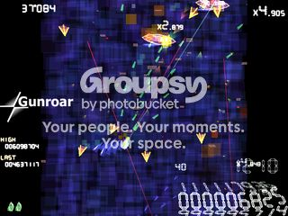
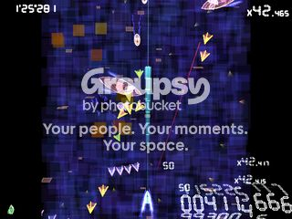
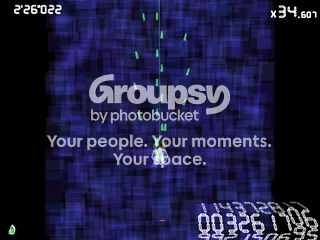
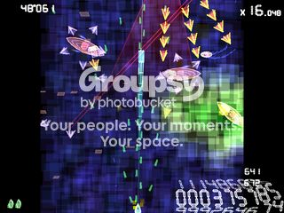
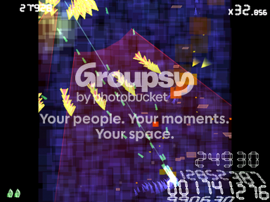

#3446 1 2005-06-24T20:35:30Z Keron Cyst Guns, Guns, Guns!
360-degree gunboat shooter, 'Gunroar'.
Homepage:
www.asahi-net.or.jp/~cs8k-cyu/windows/gr_e.html
Direct Download (0.1, first released version):
www.asahi-net.or.jp/~cs8k-cyu/windows/gr0_1.zip
Quote: readme_e.TXT
* How to play
Steer a boat and sink enemy fleet.
- Controls
o Move
Arrow / Num / [WASD] / [IJKL] / Joystick
Main Title & Automatic Fire:

Quote: readme_e.TXT
o Fire guns / Hold direction
[Z][L-Ctrl][R-Ctrl][.] / Trigger 1, 4, 5, 8
Hold a key to open automatic fire and hold the direction of a boat.
Tap a key to take a turn while firing.
o Fire lance
[X][L-Alt][R-Alt][L-Shift][R-Shift][/][Return] / Trigger 2, 3, 6, 7
Lance is a single-shot weapon. You have to tap a key to fire a next lance.
You can't fire a next lance while a first lance is in a screen.
Lance:

Quote: readme_e.TXT
- Rank multiplier
Rank multiplier (displayed in the upper right) is a bonus multiplier
that increases with a difficulty of a game.
You can increase a rank multiplier faster by going forward faster.
- Boss appearance timer
Boss appearance timer (displayed in the upper left) is a remaining time
before a boss ship appears.
Apparently when you die you respawn with an octagonal shield alongside your temporary invincibility that can protect you from one shot. Use it wisely


Look at the trapped boat to the right

Green is land. Some shallow ground blocks only movement, but not projectiles. There are turrets mounted on some land.

Red lines converging upon you show where enemies are located. If the space between two lines is filled, that shows that the enemy is using a heavy weapon which covers over a lot of space.
All the enemies have a red core. You can destroy their turrets, but the gunboat's mainframe doesn't go down until you destroy their central core. This applies to bosses as well, so make sure when you encounter bosses their core's in view, as the screen doesn't move upwards when you're fighting one.
Don't know how to get past bosses? Stick this file in Gunroar\replay, watch the replay in the main menu, and observe how I do it 
You can easily bypass bosses, but you don't get any points for it.
#78152 2 2005-06-24T20:40:58Z Maniac Ooh.

Now to wait for it to come out on Mac
#78154 3 2005-06-24T20:44:25Z Keron Cyst If you're close to an enemy, take advantage of your boat's speed; the enemy gunboats' turrets have a slow turn rate.
I love the 3D point system (bottom-right)
#78307 4 2005-06-25T05:46:34Z astro Peh... I've downloaded all of these bloody games, I just have to get around to playing them. They look so great though.
#78362 5 2005-06-25T14:27:18Z iangb *downloads*
Pity it isn't on the mac, or me and Maniac would probably have another long battle.
*plays*
I love kenta cho. My only gripe with this is that I got used to the '360'-ness aiming from warning forever, and this is the opposite to it. Oh well. It's still great fun to play.
#78364 6 2005-06-25T14:30:01Z Maniac Yeah, don't get too far, would you?
#79300 7 2005-06-28T18:42:48Z Keron Cyst Man, no matter how much I try I simply can't beat my high score (main menu, screenshot above)

#79975 8 2005-06-30T16:10:43Z Keron Cyst Is it because of the Topic Description?

No one likes
Gunroar? It's harder than
Torus Trooper to me...
#79976 9 2005-06-30T16:14:07Z Trogdor007 I'm a mac, too. But i'd like to try it

#79989 10 2005-06-30T17:04:14Z Maniac Yeah. 'E mack people 're impati'nt folk.
#80040 11 2005-06-30T19:25:59Z brickman I dled it, but I actually haven't gotten around to playing it yet.
#80267 12 2005-07-01T15:12:10Z astro I find it too hard to control since you can't move while shooting. I don't like it looks awesome though (as they all do).
Has anyone played Tumiki Fighters? That's hard and interesting.
#80270 13 2005-07-01T15:15:21Z Maniac Yes, Keron has, back in the Torus Trooper thread I think... Level 3 is really difficult apparently.
#80281 14 2005-07-01T15:39:51Z Ryuk It's asteroids with moving.
#80330 15 2005-07-01T19:11:05Z brickman Uh, you could definately move in asteroids, blackwolf.
#80342 16 2005-07-01T19:43:50Z Maniac Yeah. And there aren't any asteroids in Tumiki, only enemy fighters.
#80400 17 2005-07-02T00:04:40Z Keron Cyst ... and I don't recall
Asteroids always going eastwards, with huge enemies made out of bricks, and lacking the hyperspace function, and being able to strafe while firing, and grabbing enemy corpses, and controlling a plane with a rotating propeller, and having a background (the true, old-skool
Asteroids had no background; some newer versions do), and having awesome music, and...

I can't believe you degrade a beautiful work by Kenta Cho down to nasty
Asteroids 
#80432 18 2005-07-02T03:40:48Z brickman Umm, you do realize the asteroids comment referred to gunroar instead of Tumiki, right? You did figure that out, right? Right?
*Feels like the whole world just lost some IQ points*
#80461 19 2005-07-02T05:18:13Z Keron Cyst It sounded like he was referring to TF from
Maniac's post. And in that case,
brickman, he meant 360-fighting, but the screen is moving upwards instead of sitting in the same place (like
Asteroids), but you haven't tried out
Gunroar yet, have you?

#80472 20 2005-07-02T06:00:10Z Guest we've ben playing this since it came out, and WOW.. best style ever.
man.. it's so depressing, how can you improve on that?!?!
raigan
#80479 21 2005-07-02T06:07:54Z astro You don't need to improve.
----
1000 POSTS FOR ME! OMFGZ0RZ!
#80608 22 2005-07-02T20:15:33Z Keron Cyst Beat my high score (can't show a screenshot right now; I'm not at home). 7 mil. instead of 6. I wish replay files weren't overwritten (I forgot to save it)

BTW, @
brickman: even then,
Gunroar >>>>>
Asteroids.
#80848 23 2005-07-03T17:12:52Z brickman Is it just me, or can anyone else not figure out what's going on? I mean, what it is that does/doesn't kill you, if you even have insta-kills like in his other games or a health bar, how hurt the enemies are, what the deal is with what I assume are multipliers on enemies that seem to jump up for no reason, and most of all that whole "go forward faster for more points" thing when you only increase the forward speed by being so close to the edge of the screen that you could crash into a bullet before seeing it. I'ma stick with Rootage for now.
#80934 24 2005-07-04T01:03:10Z Keron Cyst That first sentence made no sense whatsoever. All I see is complaining about the score multiplier regarding going faster. You can multiply score by also destroying a cluster of enemies quickly.
#80995 25 2005-07-04T13:27:25Z glenno14 i downloaded tumiki fighter or whatever its called....great game....pretty hard after level 2....died on level 3.
#81059 26 2005-07-04T18:50:54Z Guest i agree that it needs a bit of balancing; so far the best scoring strategy i've found is to move upwards continuouslyn while aiming/shooitng downwards -- if you manage to survive most of the way to the boss, your multiplier ends up being 200-300x and you can just shoot the tiny guys to get CRAZY points.
of course, then the boss is so hard that you die instantly, but i've still managed to get 6M before the first boss..
raigan
p.s - nevertheless, the art style is AWESOME!!
#81075 27 2005-07-04T19:36:29Z Keron Cyst The boss is hard to get past later on. I glue myself to a side of the monitor and keep rapidly going up while aiming towards the center and firing, so I can quickly find the red core; he seems to move up as fast as the screen

... I find it too hard to control since you can't move while shooting...
The readme covered that. Just keep tapping Z instead of holding it down; your ship still fires a bit after you let go, so you can move around and shoot. But seriously, you really don't want to not be strafing
#81153 28 2005-07-05T01:46:22Z Coldfire im guilty of strafing....im so used to games like space invaders where all you do is strafe...
but it is very fun!
#85514 29 2005-07-23T06:06:51Z Keron Cyst Biggest line-of-fire indicator from an enemy I've seen so far in all my Gunroaring:

#85527 30 2005-07-23T08:03:53Z Jesse I didn't like it, it was too messy and crazy in my opinion. It was pretty much just Air Raiden with blocks for graphics and a weirder movement system (can't turn while shooting what's up with that)
EDIT: After playing it a bit more, I've decided that it's not as bad as I initially thought, but it isn't a game that I can play for more than 5 minutes
#85609 31 2005-07-23T16:58:33Z Keron Cyst Believe me, you don't want to turn while shooting. Cho programmed it purposely so that your ship would keep on firing a bit after you let go of Z, so just keep tapping Z if you want to turn while shooting.
#87626 32 2005-08-02T01:07:55Z Keron Cyst Longest replay I've ever done so far, amassing my current high score of over 8.4 mil. I got careless near the end, where I died all 3 times in under 2 min. (the first death made me frantic which killed my concentration, and I was easily hunted down by the gunboats shortly afterwards)

Attachment (lost): post-27-1122944875.rpl
#87711 33 2005-08-02T16:17:52Z Guest (the first death made me frantic which killed my concentration, and I was easily hunted down by the gunboats shortly afterwards)
i've found that that's a huge factor in many of his games -- you have to get "in the zone" and suddenly you're good at the game!
also.. i think 3M is my highest

raigan
#87813 34 2005-08-03T03:52:21Z Keron Cyst *lol* I actually don't usually touch the game more than once a day, if even that

(This week has been boring, tho'.)
Here's another replay of my reaching my current high score of 11,035,196

I do some pretty crazy stuff here, tho' I could've easily thwarted my first life loss.
...
This sometimes makes me wonder if anyone's actually
watching these

Attachment (lost): post-27-1123041141.rpl
#87835 35 2005-08-03T06:23:07Z Guest are you using 0.13? it doesn't seem to be working for me...
#87900 36 2005-08-03T13:30:27Z brickman I'll watch them for you next time I'm bored.
#88290 37 2005-08-04T17:49:32Z Keron Cyst 0.13? I'm using the first version of
Gunroar released

Why? Did Cho update it?...
#88324 38 2005-08-04T19:32:52Z Guest 0.13? I'm using the first version of Gunroar released Why? Did Cho update it?...
at least twice since then (0.11 and 0.13.. i think)

raigan
#88369 39 2005-08-04T21:57:18Z astro You know, Keron, the word 0.13 really does indicate that he updated it.
#93879 40 2005-08-24T21:14:05Z Trogdor007 I found it for mac!
I managed to get to the third boss.
Is this a major revival? I think two months is bad, but this is ok.
#93880 41 2005-08-24T21:22:13Z Maniac In here, as long as you don't spam and you contribute something, resurrections are OK
#93924 42 2005-08-25T02:38:44Z brickman In this forum, resurrections never count if they're because:
1) a new patch was finished, especially a translation one
2) a port was made
3) someone found something really new in it (for an example of how important this new thing has to be, imagine the fact that Cave Story's Curly can be saved. Not the whole ending, just saving her. But a secret level won't cut it).
#95907 43 2005-08-31T14:57:49Z Maniac Definitely worth a bump:
Gunroar just came out for Mac! Whoo!
Gunroar for Mac#95958 44 2005-08-31T19:10:38Z glenno14 I found it for mac!
I managed to get to the third boss.
Is this a major revival? I think two months is bad, but this is ok.
*cough*
Yep it was already found for mac.....
#95968 45 2005-08-31T19:37:05Z Maniac Oh. Darn.
Anyway, I've also gotten to the third boss, and died about halfway through the fourth level. This game rocks
#96198 46 2005-09-01T15:24:58Z glenno14 I decided to download it.....great fun but I suck at it....im gonna watch kerons replays.....
My highscore is only like 333,000......
#96221 47 2005-09-01T17:51:40Z Keron Cyst Those replays were taken on v1.1...
#96222 48 2005-09-01T17:55:05Z Maniac That would explain why I was having trouble figuring out how to play the replays...
#96224 49 2005-09-01T18:26:40Z glenno14 Yeah the replays werent working.....
Anyway im getting a little better......my highscore is 1,236,232 or something like that....great game....
I died all three times on a big gigantic ship with a bunch of cannons. When I shot it, a big blue shield went around it. There was too many bullets for me to dodge.....
#96226 50 2005-09-01T18:47:34Z Maniac That means you hit its core
Yeah, those things are bosses. When the timer in the upper-left reads 0, one is approaching.
#96354 51 2005-09-02T01:05:05Z Maniac *bump*
My highscore is 4,925,167 if anyone's interested
#111653 52 2005-10-31T21:44:17Z Maniac #111757 53 2005-11-01T16:43:53Z Maniac *bump again*
I wouldn't have to double-post bump if other people posted in this thread
Anyway, my new highscore is 8,649,848. Beat that!
#111827 54 2005-11-01T23:54:23Z brickman If its only been one day and your post is still on top, do an edit.
#111828 55 2005-11-01T23:55:16Z Maniac Hmm, yeah, you're right. But it wasn't the top topic. I guess I was going a little overboard. Maybe because I discretely got more than 5,000 posts.
Sorry.
#111961 56 2005-11-02T22:00:51Z Sgt. Poptarts How about we have a contest on how high our two player high scores are. I gets kind of challenging while playing two player with two hands.
#111963 57 2005-11-02T22:11:37Z Maniac There's two-player?!? Why was I not informed?
#111972 58 2005-11-02T23:10:39Z Sgt. Poptarts Well its actually called Double Play mode, but its still multiplayer. If you dont know how to get to it then push up or down until you get to it at the title screen. its actually quite fun to play alone although you are linked together so if one of you dies you both die.I just found out that I can use my recoil pad for my computer to play every kenta cho game, that makes me feel like Im playing the PS2.